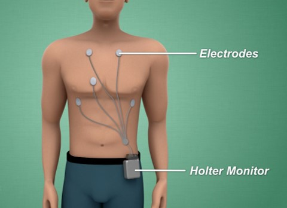

Holter Monitor – Continuous Electrocardiogram (ECG or EKG)

A Holter monitor is a portable device you wear to record a continuous ECG, usually for 24 to 72 hours. Holter monitoring is
used to detect heart rhythm irregularities that aren't found during a regular ECG exam.